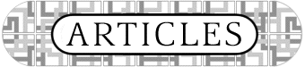

|  | |
| Triad History / King
Fisher Interview June 98
As part of Scenelink's ongoing commitment to document the history of the scene, we present an article featuring one of the legendary groups of the Commodore 64 scene. [read more] | |
| HiP'98 - Belchatow
(Poland) May 98
This year's "Hacking in Poland 98" brought together hundreds of hackers, phreakers, coders, carders and others from the h/p/a/v/c scene. [read more] | |
| Issue 6 March 98 The last issue scenelink ever produced. Once again, the lead story was on the effect of the NET act, this time we obtained an interview with the SPA's latest victim who revealed that even though the NET act had passed 3 months earlier, he had been accused under previously existing legislation. Also included were articles on the biggest warez market in Eastern Europe, Scenecon #1, and Relativity's public emag viewer. [read more] | |
| Issue 5 February 98 The truth about ChinaBlue, more than just an angry tirade against Xforce, the article offered both sides of the conflict and gave people a chance to publicly thank ChinaBlue for her time in the scene. Also included were articles on ISO standards, an interview with the former leader of INC, an interview with a coordinator of scene.org, and an introduction to dupe checks. [read more] | |
| Issue 4 January 98 Another exhaustive feature on the NET act. This time, we collected responses from 10 people at varying levels of the warez scene. Also included were articles on the birth of the ISO scene, TRG's game of the year project, and a musing on warez ethics. [read more] | |
| Issue 3 December 97 This was the first issue that provided really useful information to people in the scenes. Our coverage of the No Electronic Theft (NET) Act was probably, without too much exaggeration, the most in-depth look anywhere into what the new law would mean for people in the warez scene. Also included were articles on the warez scene in Eastern Europe, the warez magazine SYN (that never published a single issue), and the ravings of a lunatic who likened warez trading to the civil disobedience Rosa Parks. [read more] | |
| Issue 2 September 97 The last bi-weekly issue we tried to do. I like to think we learned quickly. Articles on the death of Amnesia, the agrajag cheat program, lit.org, and why software ownership is bad for society. [read more] | |
| Issue 1 August 97 The first scenelink all nighter. Articles on the new #ansi, the new Defacto2, international ansi, CIA at 50, and an article in Forbes on the warez scene. [read more] |